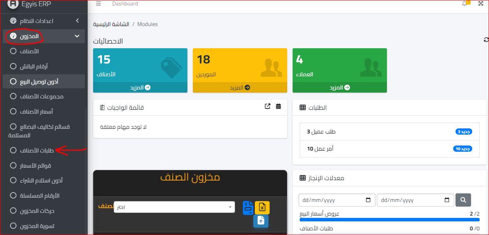
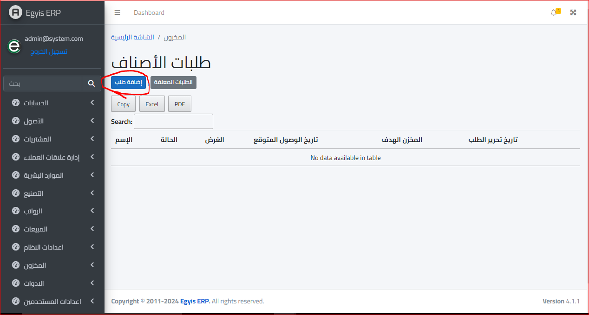
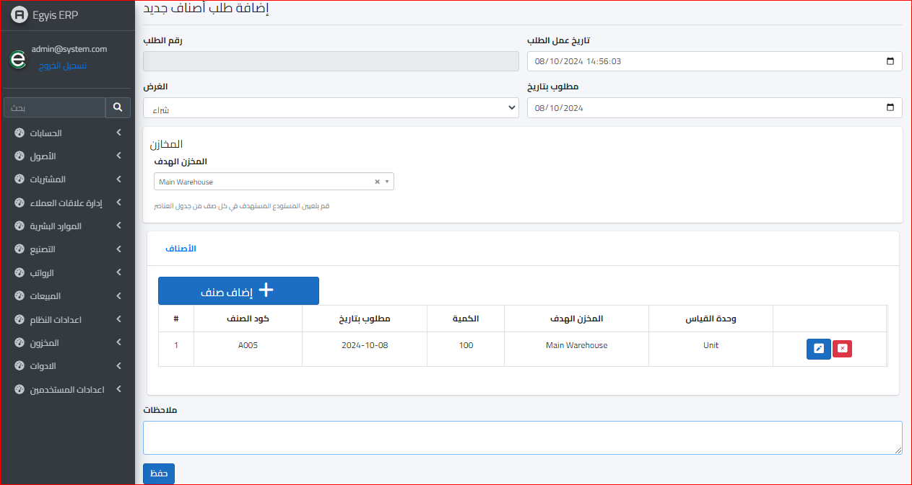
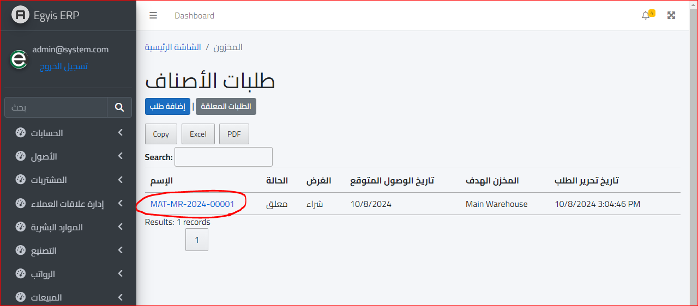
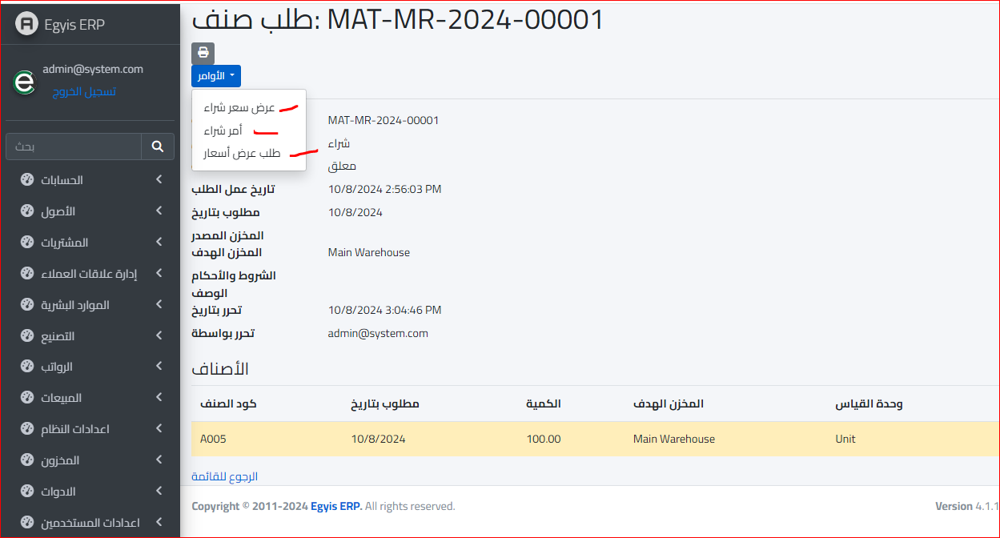

طلبات الأصناف
يتم تحديد موديول المخزون واختيار قائمة طلبات الأصناف كالتالي :
وعند فتح طلبات الاصناف تظهر الشاشة التالية :
ثم يتم اختيار اضافة طلب وسيتم التوجه الى الشاشة التالية :
رقم الطلب : وهو يعد تلقائيا بواسطة السيستم
تاريخ عمل الطلب : وهو يعد تلقائيا بواسطة السيستم ولكن يمكن تغييره
مطلوب بتاريخ : ويقصد به التاريخ المحدد للطلب وهو يعد تلقائيا بواسطة السيستم ولكن يمكن تغييره
المخزن الهدف : وهو المخزن الذي سيتم وضع الصنف فيه وتخزينه فور استلامه
اضافة صنف : اضافة الاصناف المرادة ويمكن اضافة اكثر من صنف في آن واحد
وعند الانتهاء يتم الضغط على زر حفظ
وسيتم الرجوع تلقائيا الى الصفحة السابقة وسيتم تعليق الطلب لحين الموافقة عليه كالتالي :
ويمكن الدخول على اسم الصنف لتغيير حالته من معلق الى امكانية عمل امر شراء او طلب عرض سعر كما في الشاشة التالية :
ثم بعد تحديد الأمر التالي نبدأ في عمل عرض سعر او امر شراء او طلب عرض أسعار ويمكن
الاطلاع على تفاصيل هذه الخطوات من خلال الملف الخاص بدورة المشتريات